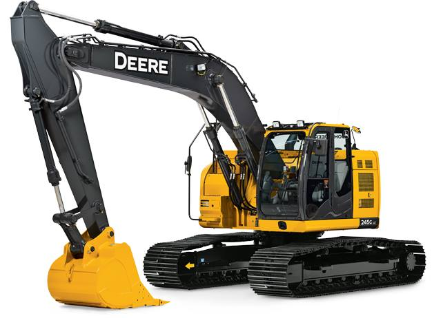

Lead Forman:
Job Description: Supervising and directing a set of excavation workers to carry out or execute jobs that are assigned to them. The foreman’s responsibilities covers ensuring that individuals who work under him/her carryout their tasks and duties diligently and effectively for successful completion. As a leader, the foreman’s role is to carry every worker along on a given task in a professional manner without fear or favor. He/she ensures that all equipment and facilities needed by workers to enable them work effectively are made available and are in good condition. Focused on the goal of achieving success on the tasks at hand, the foreman creates good working atmosphere and conditions for workers so that they will not only do the job but also put in their very best to do it well. The foreman has the ability and skills to delegate responsibilities to workers based on their expertise and specialization in order to bring out their best. Being a good motivator, the foreman makes it a priority to motivate and encourage workers to perform harder and always be at their best. The foreman must have good knowledge of tasks he/she is supervising in order to know what is right or wrong, and to put workers through where they are experiencing difficulties. A good coordinator, the foreman ensures that workers maintain a high level of decorum and orderliness in the process of carrying out the job, at all times. The foreman works as a middleman between management and workers, and settles any disputes or misunderstandings that may arise between them. As one who supervises several tasks assigned to workers, the foreman is expected to have experience in quite a number of areas and showcases his/her experience in the execution of these tasks. The Foreman organizes meetings with workers and management officials from time to time to discuss new developments and progress of the project at hand and the overall success of the company. As an authority figure, the foreman exudes some level of control over workers, but does it in a manner that doesn’t seem hostile and rude to them. Showing his skill and expertise on the job, the foreman is like a reference to workers, thus, they train and coache them on how to improve their craft to become better on the job.
Skills, knowledge, and Abilities
- Create working schedule for workers.
- Place order for needed equipment.
- Measure strength and weaknesses of workers.
- Hire workers when needed with consent of management.
- Reprimand workers when found wanting.
- Assign appropriate tasks to workers.
- Ensure that workers are up and doing.
- Ensure that work is always in good progress.
- Keep management updated on project development.
- Make sure that works are completed on or before deadlines.
- Ensure that safety of workers is guaranteed at all times.
The foreman is expected to have the following skills and abilities in order to carryout his/her duties effectively:
- Good time management skills.
- Good human relations skills.
- Good managerial skills.
- Ability to act spontaneously.
- Have a positive work attitude and disposition.
- Ability to be versatile.
- Ability to take decisions solely.
- Ability to manage temper.
- Being patient.
- Pay attention to instructions.
- Good communication skills.
Lead Excavator:

Job Description: Are you looking for a career with a nationally recognized stable growing company?
Do you like to work outside? Are you a team leader?
Would you like to receive recognition for a job well-done?
If you answered yes to any of these questions this may be the job for you....
We are a national leader in the residential services industry. We perform repair and/or replacement of Plumbing and HVAC. As a company, we have set the goal to be the best in all markets we serve. While that challenge sets a high standard for employees, it also serves a roadmap for long-term success and provides a great work environment!
We have an immediate opening for an Excavator Lead who is flexible.
You must know have current operating experience on a backhoe and own your own tools.
This position has a great earnings potential for the right candidate.
Great Benefits, Team Environment and Opportunity for Advancement.
We offer a full range of benefits for our full-time employees that include:
- Stable/Year-A-Round Work
- Medical/Dental/Vision Insurances
- Basic & Optional Life Insurance
- Paid PTO and Holidays
- 401 (k) Retirement Plan
- Employee Assistance Program
- Health-Care Flex Accounts
- Short & Long-Term Disability
If this sounds like you and you think you would be a good fit then please Contact us
All candidates are required to pass pre-employment drug testing and background checks required.
If you would like to take your skills to a whole new level please email us today!
United by Exceptional Service!
We are an Equal Opportunity Employer.